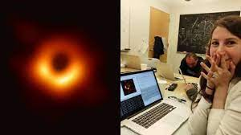

Karen Spärck Jones

História de Karen Spärck
Karen Ida Boalth Spärck Jones nasceu em Huddersfield, Yorkshire, Inglaterra. Seu pai foi Owen Jones, um professor de química, e sua mãe Ida Spärck, uma norueguesa que se mudou para Grã-Bretanha durante a Segunda Guerra Mundial. Eles deixaram a Noruega em um dos últimos barcos após a invasão alemã em 1940. Spärck Jones estudou em uma escola de gramática em Huddersfield e depois, de 1953 a 1956, no Girton College, Cambridge, estudou História, com um ano adicional em Ciências Morais (filosofia).
Formação de Karen Spärck
Karen Spärck estudou em uma escola de gramática em Huddersfield e depois, de 1953 a 1956, no Girton College, Cambridge, estudou História, com um ano adicional em Ciências Morais (filosofia). Rapidamente ela se tornou professora de escola, antes de iniciar sua carreira na Ciência da Computação. Durante sua carreira em Ciência da Computação, ela fez campanha para que mais mulheres entrassem na computação
Invenções e descobertas para a Tecnologia
Ela foi uma cientista da computação britânica que foi responsável pela criação do conceito da frequência inversa de documentos, uma tecnologia que sustenta os mecanismos de buscas mais modernos. Em 2019, o The New York Times publicou seu obituário tardio em sua série Overlooked, chamando ela de “a pioneira da ciência da computação para trabalhos combinando estatísticas e linguísticas, e uma defensora das mulheres neste segmento”.
[Fonte:Wikipedia]
Grace Hooper

História de Grace Hooper
Grace Murray nasceu em 9 de dezembro de 1906 e faleceu em 1992. Foram 85 anos de história de vida e de participação na história da computação. Casada, passou a ser chamada de Grace Hopper. Grace Hopper é conhecida por pensar “fora da caixa”. Ou seja, a mesma não se contentava com seguir as coisas como elas eram simplesmente porque elas eram daquela maneira. Desde pequena fora incentivada por seus pais a almejar mais do que a sociedade esperava das mulheres da época.
Formação de Grace Hooper
Grace Hopper foi à Hartridge School em Plainfield, Nova Jersei. Foi inicialmente rejeitada no processo de admissão no Vassar College aos 16 anos (suas notas em latim eram baixas), sendo admitida no ano seguinte. Graduou-se em 1928 como bacharel em Matemática e Física e, em 1930, concluiu seu mestrado na Yale University. Em 1934, também na Yale University, conquistou seu Ph.D. em Matemática sob a orientação de Øystein Ore. A dissertação dela "Novos Critérios de Irredutibilidade" foi publicada no mesmo ano. Começou a ensinar Matemática no Vassar em 1931 e foi promovida a professora associada em 1941.
Invenções e descobertas para a Tecnologia
Grace Hooper é considerada a mãe da programação de computadores. Criou a Linguagem Comum Orientada para Negócios (COBOL, na sigla em inglês), a primeira linguagem complexa de computador, que é utilizada até hoje por empresas de todo o mundo. Esta norte-americana obteve um doutorado em Matemática por Yale em 1934 e, quando os EUA entraram na Segunda Guerra Mundial, abandonou seu trabalho de professora de matemática e ingressou na Marinha, onde chegou à patente de contra-almirante.
[Fonte:Wikipedia]
Hendy Lamarr

História de Hendy Lamarr
Nascida na Áustria em 1914, Hedwig Eva Maria Kiesler já mostrava interesse em máquinas e invenções na infância. Mas, por influência da mãe pianista, embarcou no mundo das artes durante a adolescência. Em 1930, aos 16 anos, fez sua primeira participação em um filme. Em 1933, com 18 anos, estrelou o controverso longa-metragem Ecstasy, tido como o primeiro na história a exibir uma cena de orgasmo.
Formação de Hendy Lamarr
Em 28 anos de carreira, participou de mais de 30 filmes e fez uma importante contribuição tecnológica durante a Segunda Guerra Mundial, uma co-invenção, com o compositor George Antheil, um sistema de comunicações para as Forças Armadas dos Estados Unidos que serviu de base para a atual telefonia celular. Em reconhecimento do valor de seu trabalho e da importância da tecnologia por ela inventada, seu nome foi postumamente inserido no National Inventors Hall of Fame em 2014.
Inveção de Hendy Lamarr
A internet Wi-Fi e a conexão Bluetooth, duas das tecnologias mais importantes nos dias de hoje, só saíram do papel graças a uma mulher judia que se refugiou nos Estados Unidos. Hedy Lamarr, que morreu em 2000 aos 85 anos, além de ser uma renomada atriz do começo do século passado, era também inventora. Ela desenvolveu o sistema de salto em frequência, planejado originalmente para guiar torpedos submarinos usando sinais de rádio.
[Fonte:Wikipedia]

Rosaly Lopes
História de Rosaly Lopes
A carioca nasceu em 1957, em uma família de classe média, cheia de mulheres pioneiras (sua bisavó, lá nos tempos de Dom Pedro, foi a primeira brasileira a completar o ensino secundário!). Já aos quatro anos de idade, os olhos de Rosaly brilharam ao ver Yuri Gagarin tornar-se o primeiro ser humano a viajar pelo espaço! Ela cresceu lendo sobre o programa espacial e a corrida para a lua, e sonhava em ser astronauta.
Formação de Rosaly Lopes
Inspirada em parte pelo trabalho de Poppy Northcutt na NASA, mudou-se para Londres em 1975, onde ingressou no curso de astronomia na Universidade de Londres, onde formou-se como uma das primeiras da classe em 1978. No seu último semestre, fez um curso de ciência planetária com o geólogo John Guest e na terceira semana de curso, o Monte Etna, na Itália, explodiu. Rosaly então resolveu mudar de área e estudar vulcões, tanto na Terra quanto no espaço.
Inveção de Rosaly Lopes
Rosaly realiza pesquisas sobre a Titã - a maior lua de Saturno e a segunda do sistema solar, atrás de Ganimedes, satélite natural de Júpiter - a partir dos dados recebidos da nave Cassini-Huygens. Lançada em 15 de outubro de 1997, ela entrou em órbita em 1º de julho de 2004 e terminou sua missão em 15 de setembro de 2017.
[Fonte:Wikipedia e BBC]
Katie Bouman
História de Katie Bouman
Katherine Louise Bouman (West Lafayette, Indiana, 9 de maio de 1989) é uma professora assistente de ciência da computação no Instituto de Tecnologia da Califórnia. Ela pesquisa métodos computacionais para geração de imagens e foi uma das pessoas responsáveis pela reprodução da primeira imagem de um buraco negro. Bouman foi responsável pela liderança e desenvolvimento do algoritmo responsável pelo cruzamento e correção de dados obtidos usando o Event Horizon Telescope..
Formação de Katie Bouman
Começou a ter interesse por ciência e pelo universo quando ainda era uma estudante do Ensino Médio. Concluiu sua graduação em Engenharia Elétrica na Universidade de Michigan. Ela obteve mestrado em engenharia elétrica no Instituto de Tecnologia de Massachusetts, onde também concluiu seu doutorado.
Inveção de Katie Bouman
Katie foi uma das responsáveis pela liderança de um grupo de 200 cientistas e o desenvolvimento de um dos algoritmos que possibilitou capturar a primeira imagem de buraco negro. O algoritmo é chamado de CHIRP e foi capaz de combinar todas as imagens obtidas pelos oito telescópios ao redor do mundo (que, unidos, formam um telescópio virtual do tamanho da Terra) para a confecção do produto final.
[Fonte:Wikipedia e UFRGS]
